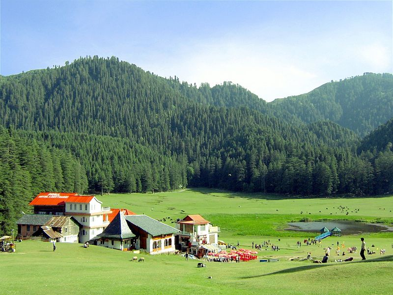
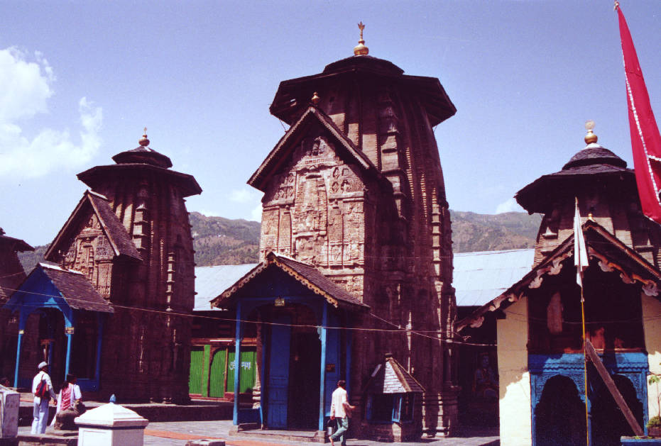
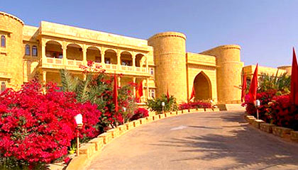
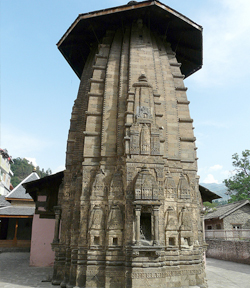
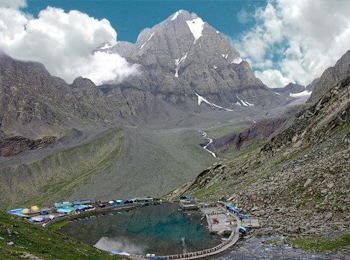

Chamba (Hindi: चम्बा) is a town in the Chamba district in the state of Himachal Pradesh, in northern India. According to the 2001 Indian census the town is situated on the banks of the Ravi River (a major tributary of the Trans-Himalayan Indus River), at its confluence with the Sal River. Chambial were the Rulers of Chamba State Chambials use suffix Varmans. Though historical records date the history of the Chamba region to the Kolian tribes in the 2nd century BC, the area was formally ruled by the Maru dynasty, starting with the Raju Maru from around 500 AD, ruling from the ancient capital of Bharmour, which is located 75 kilometres (47 mi) from the town of Chamba. In 920, Raja Sahil Varman (or Raja Sahil Verma) shifted the capital of the kingdom to Chamba, following the specific request of his daughter Champavati (Chamba was named after her). From the time of Raju Maru, 67 Rajas of this dynasty have ruled over Chamba until it finally merged with the Indian Union in April 1948, although Chamba was under British suzerainty from 1846 to this time.
Khajjiar (Hindi: खज्जियार) is a hill station in Chamba district, Himachal Pradesh, India, located approximately 24 km from Dalhousie. Khajjiar sits on a small plateau with a small stream-fed lake in the middle that has been covered over with weeds. The hill station is surrounded by meadows and forests. It is about 6,500 feet (2,000 m) above sea level in the foothills of the Dhauladhar ranges of the Western Himalayas and peaks can be seen in the distance. It is part of the Kalatop Khajjiar Sanctuary.
On 7 July 1992, Mr. Willy T. Blazer, Vice Counselor and Head of Chancery of Switzerland in India brought Khajjiar on the world tourism map by calling it "Mini Switzerland". He also put a sign board of a yellow Swiss hiking footpath showing Khajjiar's distance from the Swiss capital Bern-6194 km. Khajjiar is among the 160 locations in the world that bear topographical resemblance with Switzerland. The counselor also took from Khajjiar a stone which will form part of a stone collage around the Swiss Parliament to remind the visitors of Khajjiar as a Mini Switzerland of India.A little away from the lake is the temple of Khajji Nag belonging to the 12th century AD made by the king of chamba Preeti Singh . In the mandapa of the temple one can see the images of the Pandavas and the defeated Kaurvas hanging from the roof of the circumambulatory path
Built in the 10th century by Raja Sahil Verman, Laxmi Narayana Temple is the main shrine in Chamba that includes Bimana i.e. Shikhara and Garbhgriha with a small antarala and a mantapa. The temple has wooden chattries and a shell roof at the top to protect against snowfall. There is a wheel shaped roof that helps to protect from cold. It houses a metallic image of Garuda, the mount of Lord Vishnu. It's a beautiful place of great historical implication and architectural marvel. It has a mandapa like structure too. The entire area includes six temples in a row from north to south and is dedicated to Lord Shiva and Vishnu.
Laxmi Narayan Temple is one of the most popular temples of Chamba that is known for its great historical significance and architectural marvel. There are also other temples in the complex like Radha Krishna Temple- built by Rani Sarda (wife of Raja Jit Singh in 1825), Shiva Temple of Chandragupta- built by Sahil Varman and the Gauri Shankar Temple- built by Yugkar Varman (the son of Sahil Varman). There is a Garuda statue in metal watches over the main gate, which is placed by Raja Balabhadra Verma. The latest addition to the shrine in historical periods was in answer to the Mughal terror. Then Aurangzeb the emperor order to demolish the temple and the Raja Chhatra Singh included gilded elevations to the temple in the year 1678.
Founded by Raja Umed Singh in the 18th century, the Rang Mahal showcases a perfect blend of British and Mughal architecture. It's one of the largest monuments, which is located in Chamba. It's a striking building designed with high fort-like walls and the architecture has an unparalleled combination of British and Mughal styles. During that time, the monument of the western part was used as a royal treasury and the southern part of the monument was later built by the Raj Sri Singh in the year 1860.
Later on, many changes were done to the historical building when the State Handicrafts Department took control of it. Moreover, some of the historical artifacts are preserved in the Bhuri Singh Museum of Chamba, where travelers can find plenty of beautiful paintings on the wall.As legend goes, Kind Umed Singh made this palace but later Raj Sri Singh- the king of same dynasty repaired the Rang Mahal. The main aim behind repairing this palace was not only for King's accommodation but also to have a warehouse for royal grain and treasure. This monument has now become a Himachal Emporium, which is popular as a famous shopping destination for beautiful hand-made goods. The emporium offers embroidery work by local women. The place is popular for its unique embroidery work on silky fabrics.
Built by Raja Sahil Varman in the memory of his daughter Champavati in Chamba, this temple is a pilgrim destination for many tourists. The temple, which holds great religious and historical significance, is located nearby Treasury building and Police Post in Chamba. It can be discerned by its Shikhara style and several ornate stone carvings that make it unique from other temples in this region. The Shikhara style of this temple reminds travelers of the architectural wonders of Nepal that features cylindrical structures categorized into 5 to 9 parts.
It has a large wheel on the rooftop that distinguished it from other temples in North India. Due to the magnificence and grandeur of the temple, it is always compared with Laxmi Narayan Temple. Many pilgrims visit here to worship and pay their respects to the shrines of Vasuki Naga and Wazir. This temple holds great historical and archeological value, and is looked after by the officials of Archeological Survey of India. Tourists may plan their visit to this temple from March to June as the climate remains pleasant. Champavati Temple is named after Champavati, who was the daughter of King Sahil Varman, the founder of the temple. It holds great historical and religious relevance for many hindus. This temple enshrines a deity of Goddess Mahisasuramardini, the avatar of Goddess Durga.
Also known as Chamba Kailash, the Manimahesh Kailash Peak stands high above the Manimahesh Lake, which is believed to be the home of Lord Shiva. It is situated in the Bharmour subdivision of the Chamba District in Himachal Pradesh. The Manimahesh Lake is at the base of the Kailash peak which is at 18,547 ft and both are admired by the people of Himachal Pradesh. It is blessed by the goddess Kali and protected by Lord Shiva. Thousands of tourists journey here to take a dip in its sacred waters of Manimahesh on the fifteenth day following the Janamashtami festival. A huge fair is held every year at this lake in the month of August or September.
As per the legend, it is believed that Lord Shiva has created Manimahesh Kailash after tying the knot with Goddess Parvati, who is worshipped as Mata Girja. As per the local myth, there is a rock formation in the form of a Shivling on this mountain, which is known as the manifestation of Lord Shiva. The snow field at the base of the mountain is known by the local people as Shiva's Chaugan. Moreover, it is also believed that Manimahesh Kailash is unbeatable as no one has so far surmounted it. Over the decades, a local tribe tried to climb along with the herd of sheep but he failed and turned into a stone along with his sheep. Another legend says that a snake also tried to climb the mountain but it also turned into stone. Pilgrims believe that if the Lord wishes then only they can view the peak.